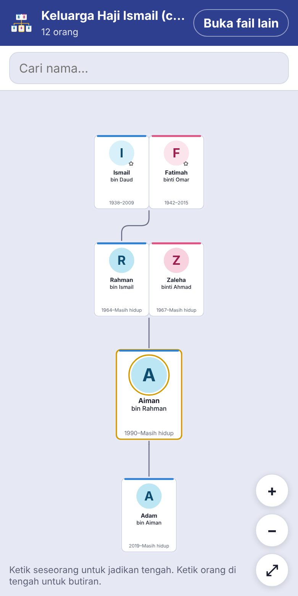
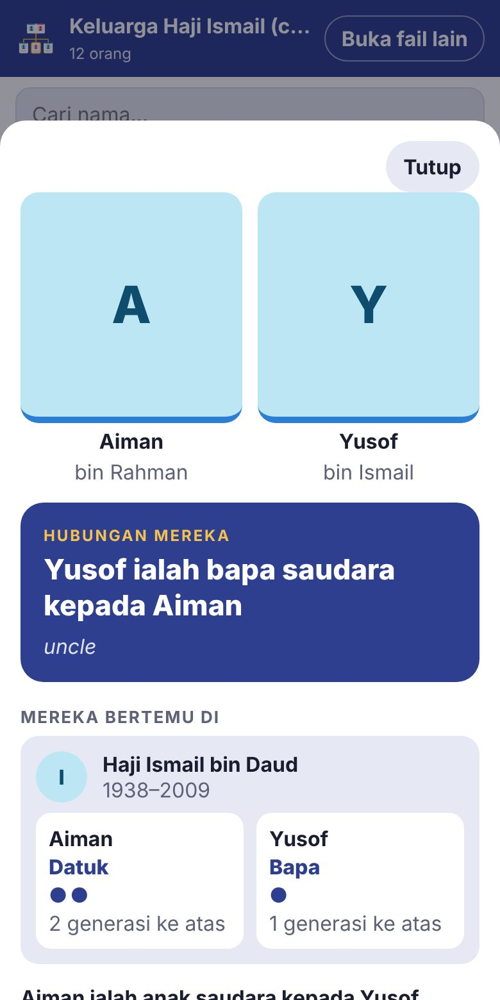
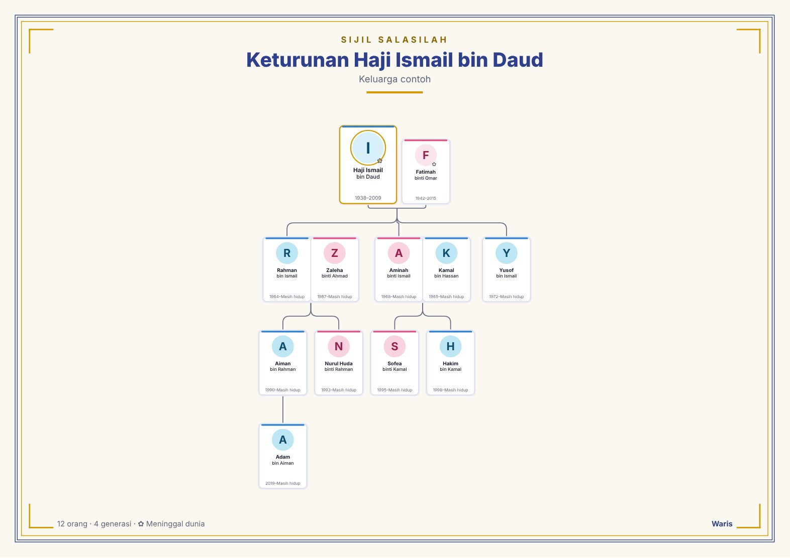

Waris ialah aplikasi salasilah keluarga yang faham keluarga kita: bin dan binti, sepupu, sepupu kedua, pakcik, menantu dan biras. Dari moyang hingga cucu, dalam satu salasilah yang cantik. Waris is a family tree app that understands Malay families: bin and binti, sepupu, second cousins, pakcik, in-laws and more. From great-grandparents to grandchildren, in one beautiful tree.

Bukan sekadar pokok keluarga. Waris tahu siapa pakcik, siapa sepupu kedua, dan di mana dua orang bertemu dalam salasilah.More than a family tree. Waris knows who is pakcik, who is a second cousin, and where two people meet in the family.
Gambar setiap orang, garisan melengkung, cubit untuk zum. Lancar walaupun ribuan orang.Photos for everyone, smooth curved lines, pinch to zoom. Smooth even with thousands of people.
Pilih dua orang, Waris jawab dalam satu ayat: "Yusof ialah bapa saudara kepada Aiman".Pick any two people and Waris answers in one sentence, in Malay and English.
Cetak salasilah sebagai PDF bersaiz A4 atau A3, lengkap dengan gambar. Sesuai untuk dibingkai.Print your tree as an A4 or A3 PDF with photos, ready to frame.
Tiada akaun, tiada iklan, tiada pelayan. Data keluarga kekal dalam telefon anda.No account, no ads, no servers. Your family's data stays on your phone.
Hantar fail keluarga melalui WhatsApp. Saudara boleh menambah, kemudian anda gabungkan semula tanpa berganda.Send the family file on WhatsApp. Relatives add to it, and you merge it back without duplicates.
Import dan eksport Excel. Ahli keluarga yang guna iPhone boleh lihat melalui Waris Web.Import and export Excel. Family on iPhone can view it through Waris Web.
Waris mengira hubungan dari salasilah sebenar, bukan sekadar teka.Waris works relationships out from the real family tree, not guesses.


Pilih seorang leluhur, berapa generasi, dan saiz kertas. Waris sediakan PDF yang cantik untuk dicetak, dikongsi atau dihadiahkan pada hari raya.Choose an ancestor, how many generations and the paper size. Waris makes a beautiful PDF to print, share or give at family gatherings.
Kongsi fail keluarga, kemudian mereka buka Waris Web di Safari: lihat salasilah, cari nama dan semak hubungan. Fail dibuka dalam telefon mereka sahaja.Share the family file and they open it in Waris Web in Safari: see the tree, search names and check relationships. The file stays on their phone.
Pengguna iPhoneiPhone users
Ya. Waris percuma, tanpa iklan dan tanpa akaun.Yes. Waris is free, with no ads and no account.
Dalam telefon anda sahaja. Waris tidak mempunyai pelayan dan tidak menghantar data ke mana-mana. Anda boleh buat sandaran sendiri bila-bila masa.On your phone only. Waris has no servers and sends your data nowhere. You can make your own backup at any time.
Kongsi fail keluarga kepada mereka. Mereka tambah dalam Waris, hantar fail semula, dan anda tekan "Gabung". Orang yang sama tidak akan berganda.Share the family file with them. They add people in Waris, send the file back, and you tap "Merge". The same people are not duplicated.